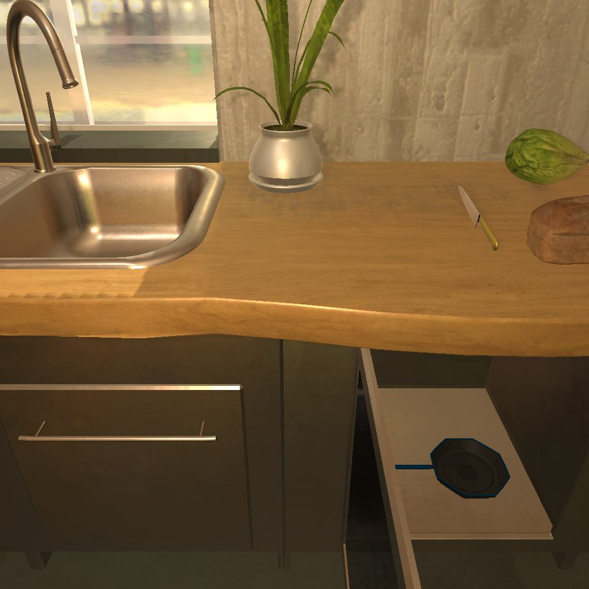

---------------------------------------------------------task: 26---------------------------------------------------------
--------------------------------------------------------------------------------------------------------------------------------------------------------------------
--------------------------------------------------------------------------------------------------------------------------------------------------------------------
Step:--------------------------------------------------------------------------17-------------------------------------------------------------------------------
----------------------------------------
VLM Prompt:
Image1:
**Instruction**
1. Analyze the provided image to identify all visible household objects, focusing on those relevant to the task description "find two kettle and put them in cabinet."
2. Use the analysis of the image and the task hint "The agent must find an object of the desired type, pick it up, find the correct location to place it, put it down there, then look for another object of the desired type, pick it up, return to previous location, and put it down there with the other object." to answer the question: what is the most reasonable action in the choices for the task description "find two kettle and put them in cabinet"?
4. Decide and write the answer using the template: The answer is: (i): , where i is the real number. If there is no desired object in the image, search every place based on **Initial Observation** to find the object. And if no one is exactly correct, choose a similar answer.
**Initial Observation**
You are in the middle of a room. Looking quickly around you, you can see countertop (1), coffeemachine (1), cabinet (1-4), drawer (1-8), sink (1), sinkbasin (1), garbagecan (1), fridge (1), microwave (1), dresser (1), sidetable (1)
**Answer Choices**
(1): go to countertop 1
(2): go to coffeemachine 1
(3): go to drawer 1
(4): go to sink 1
(5): go to sinkbasin 1
(6): go to cabinet 3
(7): go to garbagecan 1
(8): go to cabinet 4
(9): go to drawer 2
(10): go to fridge 1
(11): go to microwave 1
(12): go to dresser 1
(13): go to sidetable 1
(14): go to drawer 3
(15): go to drawer 4
(16): go to drawer 5
(17): go to drawer 6
(18): go to drawer 7
(19): go to drawer 8
(20): open cabinet 2
(21): close cabinet 2
(22): take houseplant 1 from cabinet 2
(23): take faucet 1 from cabinet 2
(24): take pan 1 from cabinet 2
(25): take bread 1 from cabinet 2
(26): take lettuce 1 from cabinet 2
(27): take knife 1 from cabinet 2
(28): examine cabinet 2
**Answer**
Let's think step by step by following the instructions.
----------------------------------------
----------------------------------------
Original Response:
Firstly, we need to identify all visible household objects relevant to the task description "find two kettle and put them in cabinet." In the provided image, we can see a countertop with a sink, a houseplant, a knife, a lettuce, and a bread loaf. There is also an open cabinet with a pan inside. However, there are no kettles visible in the image.
Based on the "Initial Observation," there are several cabinets and drawers in the room that have not been checked yet. The task hint suggests that the agent must find an object of the desired type and then find the correct location to place it. Since the desired object is a kettle and we do not see it in the image, we must search every place based on the initial observation to find the kettle.
Considering the answer choices, the most reasonable action would be to search the cabinets and drawers that have not been explored yet. Since cabinet 2 is already open and has a pan inside, it is less likely that a kettle would be stored with a pan. Therefore, the next best action would be to check another cabinet.
The answer is: (6): go to cabinet 3.
----------------------------------------
----------------------------------------
>>> Refine Original VLM Response and Get Pure Action: go to cabinet 3
----------------------------------------
-----------------------------------------------------------------
Running time: 19.055315494537354 seconds
Total Money: 9.507
-----------------------------------------------------------------
-----------------------------------------------------------------
Text Observation:You arrive at loc 7. The cabinet 3 is closed.
-----------------------------------------------------------------
UNSUCCEED